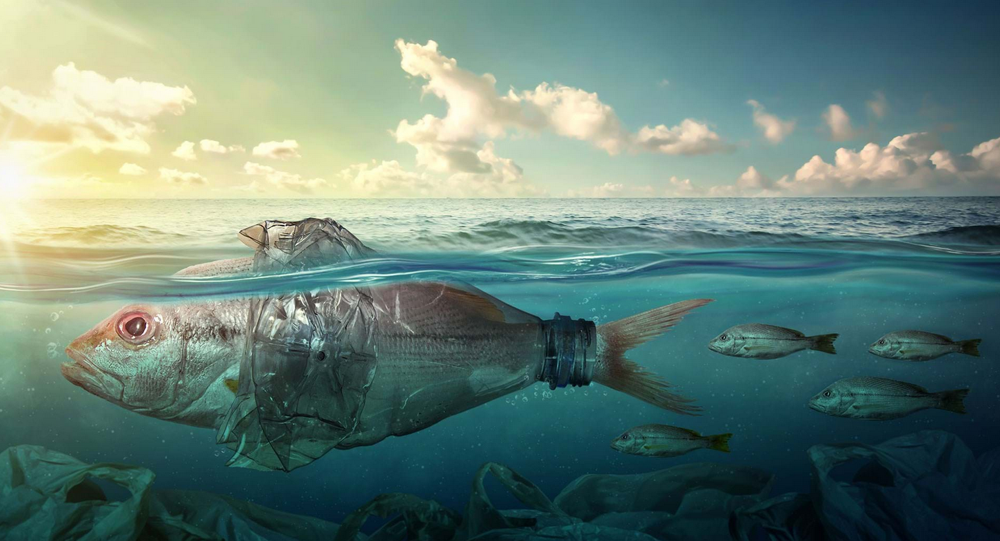
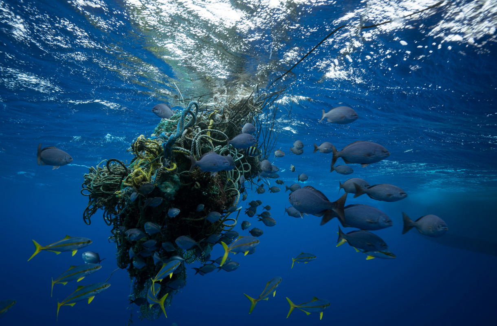
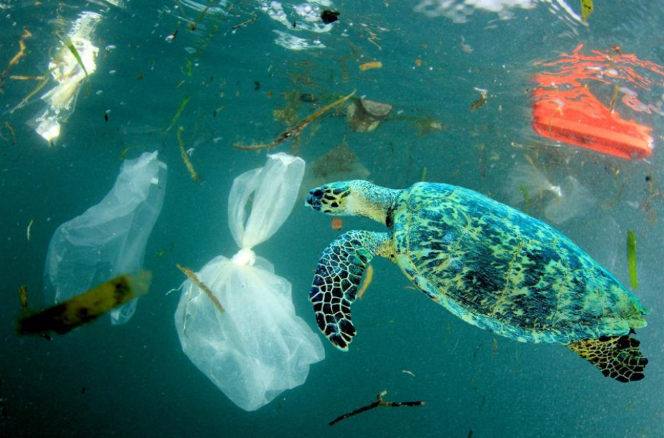

🌊 Oceans and Marine Conservation
Oceans are the lifeblood of our planet. They regulate climate, support biodiversity, and provide food and livelihoods for billions. However, human activities have placed them in grave danger. This page explores the significance of oceans, the threats they face, and the steps we can take to protect them.
🌏 Importance of Oceans

Oceans cover over 70% of the Earth's surface and hold 97% of the planet's water. They produce at least 50% of the world’s oxygen and absorb 30% of human-generated CO₂, acting as Earth’s natural climate regulator.
In addition to their environmental role, oceans sustain a global economy worth $2.5 trillion annually, supporting industries like fishing, tourism, and shipping.
⚠️ Challenges Facing Marine Environments
Plastic Pollution
Every year, over 17 million metric tons of plastic waste enter the ocean, endangering marine life and contaminating the food chain. Studies predict this could triple by 2040 if no action is taken.
Climate Change & Ocean Acidification
Since the Industrial Revolution, ocean acidity has increased by 30%, making it harder for coral reefs and shellfish to survive. Rising sea temperatures also lead to coral bleaching and the loss of marine habitats.
Overfishing & Habitat Destruction
34% of global fish stocks are overexploited. Illegal fishing and destructive techniques like bottom trawling destroy entire ecosystems.
🌍 Global Initiatives to Protect Oceans
Governments and organizations worldwide are working to safeguard marine biodiversity:
- Marine Protected Areas (MPAs): Over 16% of marine waters are now protected to prevent overfishing and habitat destruction.
- Plastic Waste Reduction: Countries like Canada, the UK, and Kenya have banned single-use plastics.
- Coral Reef Conservation: The Coral Triangle Initiative works to restore reefs across Asia-Pacific.
🚀 Technology in Marine Conservation
Advancements in technology are revolutionizing ocean conservation:
- 🛰️ **Satellite tracking** detects illegal fishing and climate change effects.
- 🤖 **AI-powered drones** help remove plastic waste from oceans.
- 🌊 **Tidal energy** harnesses ocean waves to generate renewable electricity.
👥 Community Engagement & Sustainability
Local initiatives empower communities to take action. Sustainable fishing, eco-tourism, and educational programs help raise awareness about marine conservation.
✅ What You Can Do
Small lifestyle changes can have a huge impact:
- Reduce plastic waste by using reusable bottles, bags, and utensils.
- Join beach clean-ups and conservation programs.
- Support sustainable seafood by choosing certified products.
Every action counts. Protecting our oceans is a shared responsibility!